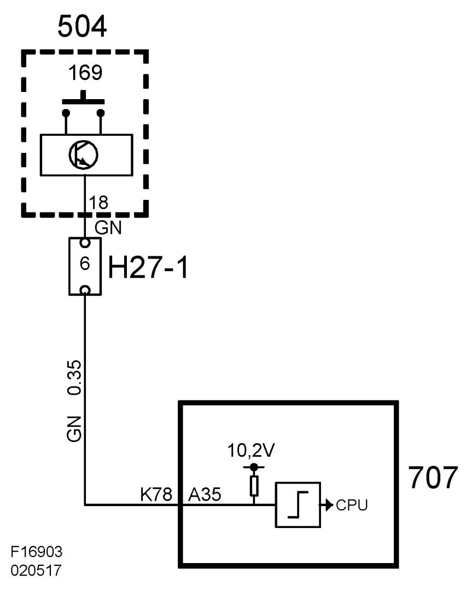

A/C Button, Faulty Function
A/C Button, Faulty Function

Fault symptom
No A/C function.
Conditions
Ignition ON.
No Diagnostic Trouble Codes Stored
Diagnostic help
Fault diagnosis detects fault in A/C button and corresponding lead only.
Test value:
A/C, Request from MCC
(See also description of readings/activations in diagnostic tool)